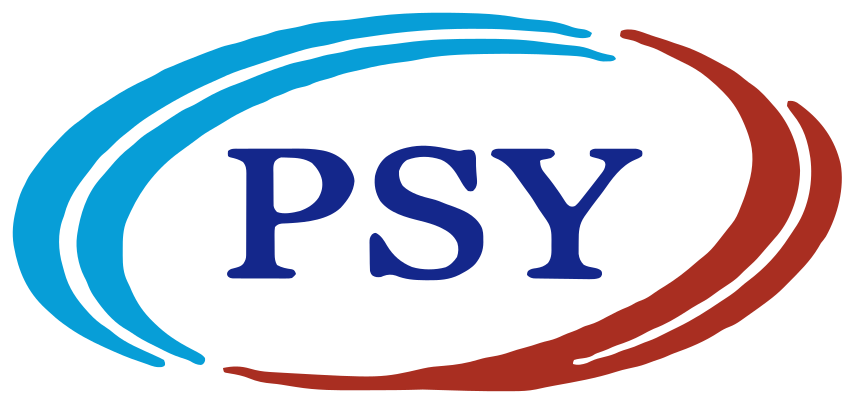
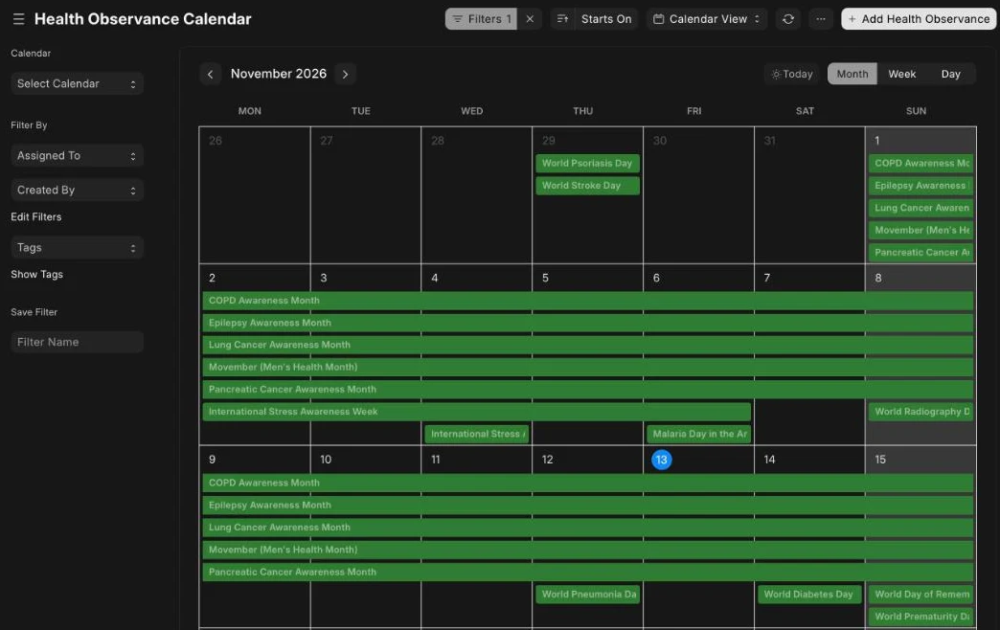

Hi, I’m Emmanuel.
I’m a software engineer in Manchester, contracting at LexisNexis Risk Solutions as a full-stack Java engineer. I also look after the systems at Amela Pharmacy, and I’m building PSY Forge, the ERP for PSY Metal & Alloy, an alloy maker in India. Until June 2026 I was at THG. I write a blog called Platform Notes.

About me
Java is the language I know best, mostly with Spring Boot. These days I also write a lot of Python for ERPNext, some TypeScript, and Windows apps in C# and .NET.
On my own projects I decide what gets built and review it, and AI coding agents write much of the code. Nothing merges without tests and a review.
I studied Mechatronics Engineering at the University of Manchester, with a year at Mercedes-AMG High Performance Powertrains in the middle.
Experience
LexisNexis Risk Solutions
Oct 2026 – now · contractFull-Stack Java Software Engineer
A contract role on a product team. Most of my work is on the backend, and I take features from the first idea through to production with product managers, designers and QA.
- Design, build and test backend services and APIs in Java 21, and the Angular screens that use them.
- Work spec first. Each feature starts as a written spec the team agrees on, and the code and tests follow from it.
- Use AI-DLC, the AI-Driven Development Life Cycle from AWS. The AI drafts the plan, design and code in stages, asks questions where things are unclear, and an engineer checks and approves each stage before the next one starts.
- Keep quality up with automated tests, code reviews and monitoring, and help other engineers through reviews and feedback.
- Take part in decisions on architecture and on how the team builds and ships its software.
Java 21 · Angular · AI-DLC · spec-driven development
Amela Pharmacy
Oct 2024 – nowPlatform Owner
I look after AmelaStock, the ERPNext system the pharmacy runs on: stock, the online shop, HR and attendance. I’m also building its till app, AmelaStockPOS.
- Built Product Intake, a workflow on top of ERPNext that uses AI to add products to the inventory from two photos of a pack. It cut the time to add a product from 30–45 minutes to about five, has added about 3,500 products, and staff still use it for new stock. Read the write-up →
- Built Blogbot and the Health Observance calendar, AI pipelines that write the pharmacy’s blog articles and health-day posts, with sourced claims, a second AI reviewer, and my approval for sensitive topics. See how it works →
- Ship changes as Docker image releases: 156 since March 2026.
- Connected fingerprint clocks to ERPNext, with alerts for late arrivals and missed shifts. In October I fixed a gap in the attendance records, linking 263 check-ins without duplicates.
- Set up the staff email accounts and built small tools to manage them.
- Fixed how Google finds amelapharmacy.com, with one main address, a working robots.txt and a clean sitemap. Redesigned the site in November 2026.
- Building AmelaStockPOS, a Windows till app that keeps working without the internet and syncs sales to AmelaStock without counting one twice.
Python · Frappe · ERPNext · Docker · C# · .NET · WinUI 3 · SQLite

PSY Metal & Alloy
June 2026 – now · clientProduct owner and developer, PSY Forge
PSY Metal & Alloy makes aluminium and zinc alloy ingots in Coimbatore, India. PSY Forge is the ERP I built to run their operations. It’s a private system for their team.
- Follows each batch from buying scrap and checking its quality, through sorting, furnace melts and chemistry tests, to finished ingots, sales and dispatch.
- Built as a Frappe and ERPNext app, after the client approved the designs in June 2026.
- I set what gets built and review it. Codex and Claude agents write most of the code.
Python · Frappe · ERPNext · Docker · psymetalandalloy.com ↗
THG Ingenuity
Sept 2021 – June 2026Software Engineer
Nearly five years on the services behind THG’s online shops, mostly in Java and Spring Boot, with TypeScript and Angular too. In my last years there I brought AI into some of them.
- Built Java and Spring Boot services for reviews, moderation, navigation, accounts and checking that a reviewer bought the item, connected through REST, GraphQL and ActiveMQ.
- Added AI-written review summaries, and questions and answers drawn from reviews, to the Java and GraphQL services the shops use.
- Moved some shops’ review moderation from old classifiers and filters to an AI-assisted check. Reviews it was unsure about still went to people.
- Built and deployed E-Bot, a Teams assistant for support questions. It searched the code, past logs and read-only service checks, and used an MCP service to find which team owned the problem. It went into full use with one team, then grew to cover wider engineering support.
- Built a video service in TypeScript and NestJS, with REST endpoints, OpenAPI docs and unit and end-to-end tests, and Angular admin tools to go with it.
- Upgraded services to Java 21 and Spring Boot 3 and helped move them to Google Cloud and Kubernetes. Looked into incidents across code, pods, logs, databases and other teams’ APIs.
Java · Spring Boot · GraphQL · ActiveMQ · TypeScript · NestJS · Angular · GKE · MCP
Mercedes-AMG HPP
Sept 2019 – Sept 2020 · placement · BrixworthSoftware and Controls Placement
My year in industry during my degree, at HPP in Brixworth, where Mercedes builds its Formula 1 power units. I worked on their control software.
- Wrote power-unit control software in C and MATLAB/Simulink, using Vector CAN tools, ATLAS telemetry and ECU workflows.
- Built FlexRay communication over two channels, with protection if one channel fails, and a SENT driver for pressure and temperature sensors.
- Worked to the MISRA C 2012 coding standard for safety-critical software.
C · MATLAB/Simulink · Vector CAN · ATLAS · FlexRay · MISRA C
University of Manchester
Sept 2016 – July 2021MEng Mechatronics Engineering with a year in industry, First Class Honours
Projects
Product Intake
A workflow on top of ERPNext that uses AI to add products to the pharmacy’s inventory. Staff photograph the front and back of a pack. It reads the photos and barcode, checks them against 11,495 old stock records, and drafts the product record with a clean catalogue photo. A person checks each draft before it’s saved.
It cut the time to add a product from 30–45 minutes to about five. It has added about 3,500 products, 95% of the stock the pharmacy kept, and staff still use it to add new products today.
Read the write-up →Blogbot and the Health Observance calendar
Two AI pipelines that write Amela Pharmacy’s health posts. Blogbot picks a topic from what people search for, researches it and writes an article for the pharmacy’s blog. The Health Observance calendar holds the year’s health days, such as World Lung Cancer Day, each with a link to its official source. Both feed one step that makes a poster and a caption for Facebook, Instagram and LinkedIn.
Most of the work goes into keeping the posts accurate. Each medical claim must come from a source the AI opened, and code checks the links and dates. A second AI reviews each article and caption and can send it back for fixes. The photos are made with no words in them. Code adds the text and logo, then an AI check looks for mistakes such as odd hands. Sensitive topics wait for my approval by email, and a log stops anything going out twice.



PSY Forge
The ERP I built for an aluminium and zinc alloy maker in India, from buying scrap to selling ingots. It’s a private system for their team.
AmelaStockPOS
Amela Pharmacy’s Windows till app. It keeps working when the internet drops, then syncs sales to AmelaStock without counting one twice.
Skills
- Java and Spring Boot
- Python, Frappe and ERPNext
- TypeScript, NestJS and Angular
- C#, .NET and WinUI 3
- GraphQL
- SQL
- Docker and Kubernetes
- Google Cloud
- n8n
- Codex and Claude coding agents
- Spec-driven development with AI-DLC
I Had 11,000 Messy Legacy Inventory Rows. Making Sense of Them Became an ERPNext Workflow
What I did with thousands of messy rows from an old stock list, and how that turned into a workflow in ERPNext.
Read it